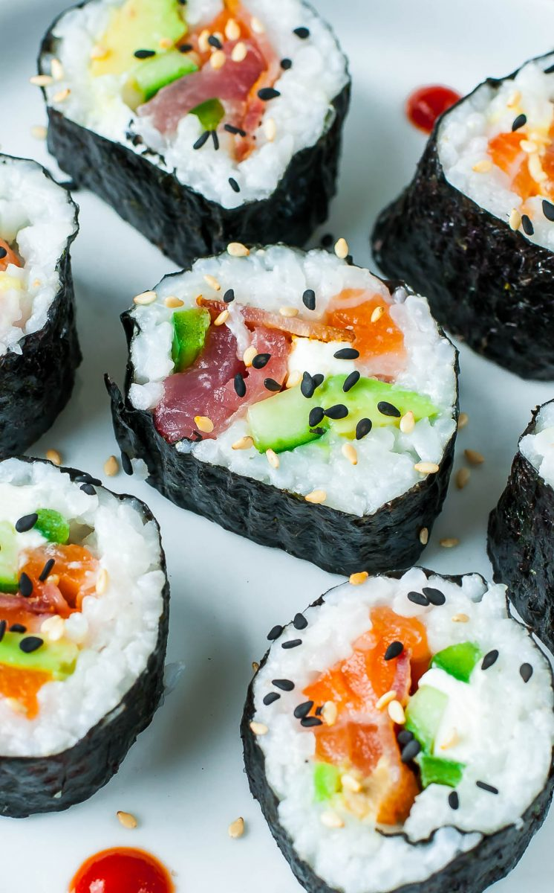
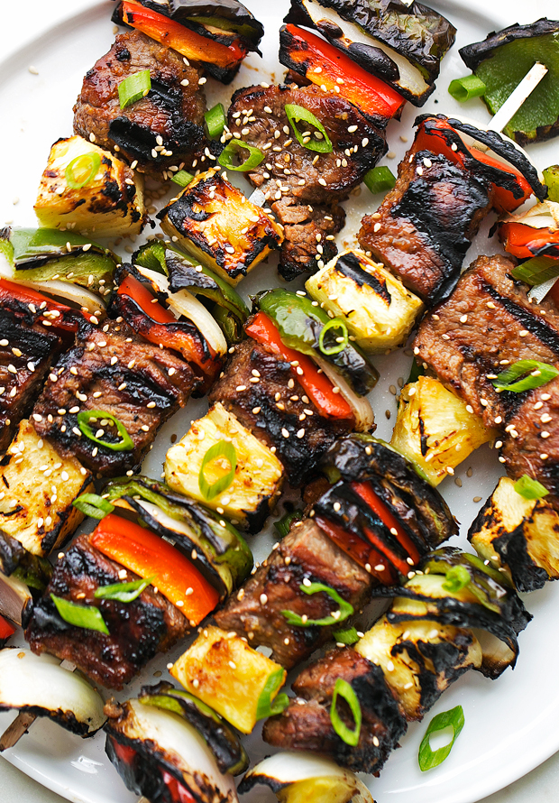

Asian Food
Asian food has greatly influenced Western food. You literally can’t go to a food store and not find some type of Asian food, whether it be sushi, dumplings, or hot pot.
History
Asian food first made its way here through Asian immigrants to Canada; as they moved, their food did too. Soon, Asian fruits such as peaches and cherries started to gain traction in western society, and before they knew it, were deeply ingrained. The immigration of these people also lead to business opportunities, since the people developed a taste for their own culture's food. Before society knew it, Asian food was being sold at almost every store, and the ones who refused eventually gave in. While the majority seemed content with just a small section of their stores occupied by these stores, others took a risk and made their entire store Asian, for better or worse. On the good side, many of these stores got the attention of Asian people, who were growing rapidly in population, and they received a steady income. However, most people at the time were not Asian, and the stores that switched risked their business. Nowadays, Asian food is found all over Canada and is deeply ingrained in our society.
Asian Food Now
Asian food now consists of Central Asian, East Asian, North Asian, South Asian, Southeast Asian, and West Asian Food. Common ingredients in these cultures include, but are not limited to, rice, ginger, garlic, sesame seeds, chillies, dried onions, soy, and tofu. Common ways of cooking include stir-frying, steaming, and deep-frying. In this website, I’m going to be covering a few East Asian cultures, which includes china, japan, and Korea. Most east Asian cuisines use oils, fats and sauces. The food made by these cultures includes the following well-known dishes: sushi, dumplings, and BBQ skewers, which are Japanese, Chinese, and Korean, respectively.
Fun facts
In most cases, Chinese food is prepared into bite sized pieces, ready for snacking!

In Korea, all the dishes are served at once!
Japanese sushi chefs must go through rigorous training before being able to make sushi!
It is hard to be this enthusiastic!
Recipes
| Name | Culture | Type |
|---|---|---|
| Kung Pao Chicken | Chinese | Main course |
| Yakisoba Chicken | Japanese | Main course |
| Korean Fried Chicken | Korean | Main course |
| Pan-Fried Chinese Dumplings | Chinese | Appetizer |
| Vegetarian Nori Rolls | Japanese | Appetizer |
| Spicy Cucumber Salad | Korean | Appetizer |